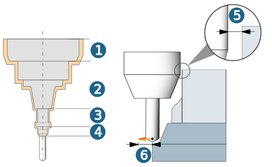
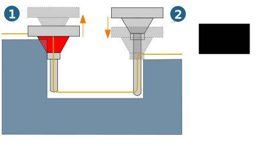

Setup
Model
|
|
Specify the model (milling area) required for the current job. Multiple allowances: If the milling area contains groups with different allowances, these allowances are taken into account during machining if the function is enabled. |
|
|
|
Additional surfaces: Temporary safety surfaces to avoid unnecessary rapid travel movements. Surfaces in the machining area that need to be known to perform a correct collision check. |
Check tool
The tool check ensures that all of the components defined for the tool are protected from a possible collision with the CAD model on the basis of existing material. The tool check is only available if you have defined a tool and also a model to be checked.
Check on: You must always enable this option if you want the tool to be checked for collisions. If the tool check is not enabled, the tool used is shown in red in the graphic preview. When this check is enabled, the defined clearance is used to check all of the components defined for the tool. We recommend that you define the clearance so that it gets continuously larger, starting with the thick shank in the direction of the spindle.
Tool check setup: the tool check settings are specified in this dialog box. For further information, see section Tool check setup
Tool check setup
Options
You can enable the Check spindle option separately.
Clearance
Clearance value added for each tool component (retained minimum distance to model). The following tool components are checked: 1. Spindle, 2. Holder, 3. Extension, 4. Thick shank (see image below). The tool tip is checked without clearance.
When using machining cycles that work with stock models, the defined clearance distance may deviate and will be increased if necessary.
Stop/Clip tolerance
This tolerance value specifies the retract (and approach) point for collision-free movement. (5) Clearance, (6) stop/clip tolerance.
|  |
Length calculation increment
Accuracy when extending or reducing the tool (see the Calculate length option).
Calculate length
The Reduce and Extend options are available if a holder, extension or spindle is defined. Only the Reduce option is available for all 5X cycles.
Extend (1): if there is a tool extension, holder or spindle collision, hyperMILL will calculate a larger tool reach, based on the tool reach defined for the tool. So, there is no limit to the maximum tool reach – the maximum possible tool reach of a real tool is simply ignored! This is the preferred option if the selected tool is available in different lengths (e.g., short, long, extra-long) and the length calculation has not yet determined the suitable real tool for the assembly. In this case, the tool is merely a geometry description with an unlimited shank length.
Reduce (2): hyperMILL calculates the shortest possible collision-free tool reach, based on the defined tool reach of the tool. This is the preferred option if you only want to calculate tool lengths that are also actually possible for the tool selected in the assembly. In this assembly, you must select the maximum tool reach as the tool reach.
|  |
Display calculated tool length
If the same tool is used in several jobs, the tool length calculated by hyperMILL is displayed. In this instance, after creating the toolpath file(s), select the tool in the browser and choose the Usage function on the shortcut menu.
For unresolvable collision
Unresolvable collisions may occur if:
-
It is not possible to avoid a collision in 5X machining as a result of a change to the tool orientation.
-
In 3D machining, it is not possible to resolve a collision involving the tool extension, holder and/or spindle by extending the tool (see calculating the tool length) or a collision will occur with the thick shank.
If a collision cannot be avoided by changing the tool orientation (5X) or tool length calculation, various options are available for the machining strategies:
Stop: The toolpath calculation stops when a collision occurs (applies for all machining strategies).
Clip: The toolpath is fully calculated. Only the collision-free areas of the toolpaths are output. As a result of rework machining with another tool and/or another tool inclination, the toolpaths found in the collision can be tracked and checked for collisions (applies to all 3D machining strategies).
Collision avoidance: With this option, the tool is side-stepped to avoid collision so that the material can be machined as deeply as possible with the most robust possible tool.
The toolpaths calculated for the Clip option are used as the basis for the 3D Rework Machining cycle.
An area is determined and graphically displayed within the 3D Automatic Rest Machining cycle. Any further machining occurs within the following cycle only: 3D Automatic Rest Machining.
When the Collision avoidance function is used, a milling area that is not within the stock is also protected against collisions. If the milling area that is outside of the stock only consists of perpendicular surfaces, no collision avoidance takes place; instead, the milling path output is suppressed.
Note
The collision check for undercut machining is guaranteed only if the option for generating NC files is disabled (also see the job list, Postprocessor > NC files tab).
Tolerance parameter
Tolerance use cases: Use the parameters of the tolerance use cases to ensure the best possible tolerances depending upon the individual machining situation. The best settings are automatically used based on the tool diameter and the selected Use case (Semi finishing, Finishing, Fine finishing, Micro finishing).
Tip
Semi finishing: The tolerances are designed for semi-finishing.
Finishing: The tolerances are adapted to general finishing.
Fine finishing: The tolerances are adapted to high-precision finishing (particularly high requirements of the components in terms of accuracy and surface quality).
Micro finishing: The tolerances are adapted to high-precision finishing of very small components. We recommend using this mode only for very small component sizes, as the calculation time and data volume can otherwise increase drastically.
For Mode specify whether the toolpath is calculated in Standard mode or in High-precision surface mode. The available use cases represent the typical machining steps during a milling operation.
High precision surface mode: Use when maximum accuracy is required to calculate the toolpath. The calculation of the toolpath is not based on the faceted model geometry, but on the real surfaces of the model. Only available for Ball mill.
True Shape point distribution: Activate to redistribute points and guarantee an even and machine control-friendly distribution of points.
Tip
To guarantee the best possible point distribution, use the CAM Plan function. The machining cycle automatically takes into account the topology information that was created with the HPM–Milling task in the CAM plan.
Filter points: Points that are located on straight toolpath sections, for example a planar surface, and are therefore not required, are filtered out.
Function is not activated (1), Function is activated (2)
Note
Please note that no or fewer points are not always the best solution for all machine controls. For more detailed information, please contact the respective machine manufacturer.
Feedrate adaption: Activate to automatically adjust the feedrate depending on the curvature of the part. The feedrate is reduced for concave curvatures (1) and increased for convex curvatures (2). This means that the real contact feedrate of the tool on the part surface remains constant.
Function is not activated (1), Function is activated (2)
3D path compensation: Available for the Ball mill tool type. Enables various NC controls to machine the model with a smaller or larger tool than actually programmed in hyperMILL. In addition to the X, Y and Z coordinates, the direction vectors I, J and K to the surface contact point must also be known.
Note
The 3D path compensation function is available only with a specially adjusted postprocessor. Without this adjustment, the NC program cannot correct this output and, as a result, both the component and machine may be damaged if the milling geometry used differs from the milling geometry used to calculate the toolpath. To adjust your postprocessor, please contact your OPEN MIND partner.
Tolerance settings
In the tolerance settings, adjust the parameters of the True Shape point distribution and Feedrate adaptation functions.
Activate True Shape point distribution to guarantee an even and correct point distribution in toolpaths. The parameters Calculation tolerance, Max. chordal error, Max. G1 length, Min. G0 distance, Reference G1 length, control the arrangement and distances between the points.
Use the Adjacent sync. ISO parameter to achieve asynchronous point distribution between individual toolpath segments by entering a (factor) value less than 1.
The Min. feedrate (factor) and Max. feedrate (factor) define the upper and lower limit for the feed rate adjustment. The factor refers to the standard feedrate defined for the toolpath. Use Number of steps to control in how many intervals the increase or decrease of the feedrate adaption is performed.